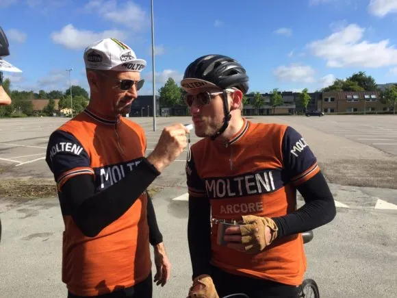

Optakt Fyen Rundt: Det podie er vores

Squadra Molteni stiller med en giftig kvartet på lørdag til Fyen Rundt. Sidste år kørte holdet Kaptajnen til en 4. plads – i år er podiet vores.
Podieplads og ny taktik
Kaptajn Niels Bjørnsteen, Løjtnant Kasper Sørensen og diesel-rouleurs Jens Langergaard og Carsten Jacobsen er klar på lørdag til at køre holdet til mindst én podieplads ved verdens ældste cykelløb – Fyen Rundt.
– Vi har afprøvet forskellige angrebsstrategier i de sidste par løb, hvor vi har stukket i højre og venstre, og venstre og højre. Taktikken er nu helt klar, fortæller Løjtnant Kasper Sørensen.
Røde blodlegemer og boghvedegrød
Også på den fysiske front er der optimeret. Holdlæge Finn Birk mener, at holdet er i den bedste form nogensinde.
– Jeg har lige målt rytterne, og de er sprængfyldt med røde blodlegemer efter deres ophold på Stelvio. De ligger dog en smule over grænseværdien for boghvedegrød. Så jeg har udleveret et boghvedegrød-meter til Kaptajnen, så han kan teste rytterne på dagen. Er grænseværdien stadig for høj, kan den tvinges ned ved at bunde et lille glas mørkt øl med 2 æggeblommer – også kaldet en “Eddy Special”, siger holdlæge Finn Birk

